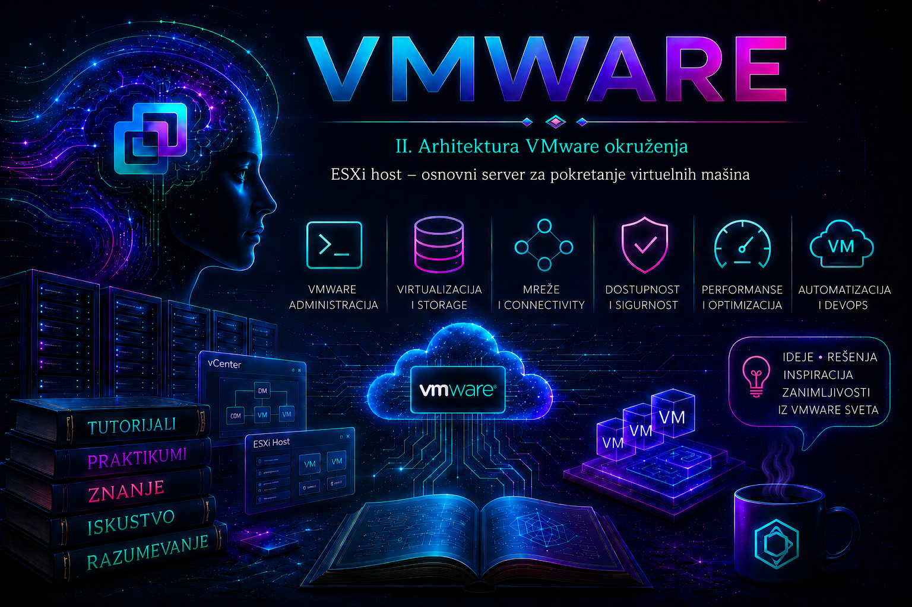

VMware

U prethodnim lekcijama virtuelizacija je predstavljena kao način da se fizički resursi odvoje od operativnih sistema, a VMware ekosistem kao skup međusobno povezanih komponenti. Sada pažnju usmeravamo na sloj na kojem se stvarni posao izvršava: ESXi host. To je fizički server sa instaliranim VMware hipervizorom koji neposredno upravlja procesorima, memorijom, mrežnim adapterima i storage uređajima i od tih resursa gradi izolovana izvršna okruženja za virtuelne mašine.
ESXi je hipervizor tipa 1 (bare-metal hypervisor): pokreće se direktno na podržanom serverskom hardveru, bez opšteg Windows ili Linux operativnog sistema ispod sebe. To ga razlikuje od desktop proizvoda VMware Workstation i Fusion, u kojima je hipervizor deo šireg host operativnog sistema. Mali namenski sistemski sloj ne znači da ESXi nema sopstvene procese, drajvere, datotečne sisteme i bezbednosne kontrole; znači da su oni projektovani prvenstveno za pouzdano izvršavanje i upravljanje virtuelnim mašinama.
Jedan host može raditi samostalno i njime se tada upravlja kroz ugrađeni ESXi Host Client, DCUI ili podržane komandne i API interfejse. U enterprise okruženju hostovi se najčešće registruju u vCenter Server-u, grupišu u klastere i održavaju kontrolisanim životnim ciklusom. vCenter nije hipervizor i ne izvršava korisničke VM-ove: njegov gubitak obično ne zaustavlja već pokrenute VM-ove, dok kvar ESXi hosta neposredno ugrožava workload-e koji se na njemu izvršavaju.
Izdanje, licenca, podrška i životni ciklus
Nazivi proizvoda i mogućnosti zavise od generacije platforme i ugovorenog paketa. Dokumentacija za vSphere 7 i 8 koristi naziv ESXi, dok dokumentacija platforme 9.0 ponovo koristi naziv ESX. U postojećim okruženjima dugo će se sretati oba termina, pa administrator uvek beleži punu verziju, update nivo, build i vendor image/add-on, a ne samo „ESXi 8” ili „ESX 9”. Funkcije poput centralnog upravljanja, vMotion-a, HA, DRS-a, distributed switch-a, Host Profiles ili vSphere Configuration Profiles nisu svojstvo samostalnog hosta u svakoj licenci; zavise od verzije, izdanja, pretplate i uključenih komponenti.
Produkcioni host ne bira se samo po broju CPU jezgara i količini RAM-a. Tačan model servera, procesor, I/O kontroleri, NIC, HBA, firmware, BIOS i drajveri moraju činiti kombinaciju navedenu u aktuelnom Broadcom Compatibility Guide-u, uz proveru kompatibilnosti guest sistema, aplikacija i backup softvera. OEM prilagođena slika ili vendor add-on često sadrže drajvere i komponente potrebne baš tom serveru. Generička slika preko podržane OEM konfiguracije može ukloniti važan drajver ili provider za nadzor hardvera.
| Odluka | Šta se proverava | Posledica greške | Dokaz prihvatljivosti |
|---|---|---|---|
| Serverska platforma | Model, CPU, TPM, Secure Boot i kontroleri | Nepodržana instalacija, PSOD ili neuspešan upgrade | Tačna stavka u Compatibility Guide-u i vendor matrica |
| Install image | Base image, OEM add-on, drajveri i firmware | Nestanak NIC/HBA uređaja ili health senzora | Desired image/compliance izveštaj |
| Boot uređaj | Kapacitet, izdržljivost, redundansa i podržanost | Korupcija bootbank-a, gubitak logova ili neuspešan upgrade | Vendor dizajn i zahtevi konkretne verzije |
| Licenca i paket | Prava na funkcije i centralno upravljanje | Planirana funkcija nije dostupna | Entitlement i funkcionalna matrica paketa |
Kako je ESXi host građen
U središtu hosta nalazi se VMkernel, namensko jezgro koje raspoređuje CPU vreme, upravlja fizičkom i virtuelnom memorijom, I/O putanjama, uređajima i mrežnim stekom. Za svaku virtuelnu mašinu učestvuju procesi i Virtual Machine Monitor sloj koji predstavljaju virtuelni hardver guest sistemu i kontrolišu izvršavanje. Management servis hostd omogućava lokalno upravljanje i Host Client, dok agent vpxa posreduje između hosta i vCenter Server-a kada je host njemu pridružen.
VMkernel mrežni adapteri, označeni kao vmk0, vmk1 i dalje, nisu isto što i fizički uplink adapteri vmnic0, vmnic1. VMkernel adapter nosi infrastrukturni saobraćaj hosta, na primer management, vMotion, vSAN, provisioning, fault tolerance logging ili IP storage, u skladu sa servisom i dizajnom. Port grupa je logička tačka povezivanja sa pravilima VLAN-a i bezbednosti, a standardni ili distribuirani virtuelni switch prosleđuje saobraćaj između virtuelnih portova i fizičkih uplinkova.
Storage sloj izlaže hostu lokalne ili mrežne uređaje i datastore objekte. VMFS je klasterski datotečni sistem za blok storage, NFS datastore koristi mrežni datotečni pristup, a vSAN objekte skladišti distribuirano kroz članove klastera. VMDK je virtuelni disk, ali njegova pouzdanost zavisi od cele putanje: guest drajvera, virtuelnog kontrolera, VMkernel I/O steka, multipath politike, HBA/NIC-a, fabric-a i storage sistema.
Od zahteva Power On do rada virtuelne mašine
- Host proverava konfiguraciju VM-a, pristup datotekama, kompatibilnost virtuelnog hardvera i zaključavanja.
- Admission control proverava dostupnost rezervisanih resursa; resource pool, reservation, limit i share pravila utiču na odluku i raspoređivanje.
- VMkernel kreira izvršni kontekst, mapira memoriju i planira vCPU-ove na fizičkim logičkim procesorima.
- Virtuelni NIC-ovi povezuju se sa port grupama, a virtuelni kontroleri sa VMDK ili drugim dozvoljenim uređajima.
- Virtuelni BIOS ili UEFI započinje boot i predaje kontrolu guest operativnom sistemu.
- VMware Tools, ako je instaliran i podržan, omogućava bolju koordinaciju i vidljivost guest stanja, ali nije zamena za monitoring aplikacije.
Izolacija sprečava da običan pad jednog guest sistema direktno sruši drugi. Ipak, VM-ovi dele fizičke resurse: nekontrolisan CPU, memorijski ili I/O pritisak jednog workload-a može izazvati latenciju drugih, a kvar hosta, zajedničkog datastore-a ili mrežne putanje može pogoditi više VM-ova odjednom. Cilj zato nije maksimalan broj VM-ova po hostu, već predvidiva usluga uz dovoljan kapacitet za kvar, održavanje i rast.
Procesor, NUMA i memorija
vCPU nije trajno vezan za jedno fizičko jezgro. CPU scheduler raspoređuje spremne vCPU-ove i balansira propusnost sa kašnjenjem. Prevelik broj vCPU-ova može usporiti VM jer scheduler mora da pronađe odgovarajuće vreme izvršavanja, dok veliki VM koji prelazi granice fizičkog NUMA čvora može češće pristupati udaljenoj memoriji. VM se dimenzioniše prema merenom opterećenju, a ne prema pretpostavci da je više vCPU uvek brže.
U esxtop CPU prikazu korelišu se %USED, %RUN, %RDY i %CSTP kroz dovoljno dug period i uz kontekst broja vCPU-ova. Jedan uzorak nije dokaz uskog grla. Povišen CPU Ready može ukazivati na contention ili prevelike VM-ove, dok Co-Stop ima smisla naročito kod SMP VM-ova. Pragovi nisu univerzalni: interval uzorkovanja i poslovni SLO moraju biti poznati.
ESXi razlikuje konfigurisan, aktivan, potrošen, rezervisan i nadoknadiv memorijski kapacitet. Shares određuju relativni prioritet kada postoji contention, reservation garantuje resurs i utiče na admission, a limit postavlja gornju granicu i može izazvati loše performanse čak i kada host ima slobodan RAM. Memory overcommit je legitimna mogućnost, ali nije besplatan kapacitet.
Pod pritiskom hipervizor može koristiti ballooning, memory compression i zatim host swapping. Transparent Page Sharing postoji, ali zbog bezbednosnih postavki i karakteristika modernih workload-a ne treba na njemu zasnivati kapacitet. Ballooning nije sam po sebi kvar; problem nastaje kada pritisak traje, guest nema memoriju koju može bezbedno vratiti ili se pojavljuju swap i aplikaciona latencija. ESXi metrike se zato povezuju sa guest paging-om i ponašanjem aplikacije.
Mreža, storage i zajedničke tačke otkaza
Produkcioni host uobičajeno ima redundantne uplinkove povezane na odgovarajuće fizičke svičeve, odvojene VLAN-ove ili druge bezbednosne granice i dokumentovanu MTU konfiguraciju od kraja do kraja. Dva vmnic adaptera nisu stvarna redundansa ako pripadaju istoj kartici, istom switch-u ili istoj fabric putanji. Gubitak management mreže ne mora odmah zaustaviti VM saobraćaj, ali uklanja upravljačku vidljivost i može onemogućiti automatizovani odgovor klastera.
Za storage se proveravaju sve očekivane putanje, multipath politika, queue i latency metrike. APD znači da su sve putanje nedostupne, ali uređaj nije nedvosmisleno proglašen trajno izgubljenim; PDL je eksplicitna potvrda trajnog gubitka uređaja. Reakcija hosta i klastera nije ista, pa se uređaji ne uklanjaju niti se agenti restartuju pre razumevanja stanja fabric-a i storage sistema.
Sistemski storage, boot i trajnost podataka
Sistemski storage obuhvata boot banke i oblasti potrebne za image, konfiguraciju, dijagnostičke dump-ove, scratch i ESX-OSData raspored, u zavisnosti od verzije i veličine uređaja. Starije laboratorije često koriste SD/USB medije, ali produkcioni dizajn mora slediti aktuelne smernice za konkretnu verziju i server; uređaj odgovarajuće izdržljivosti i kapaciteta, po mogućnosti redundantan, sigurniji je od potrošnog flash medija.
Posebno treba proveriti gde su scratch, core dump i logovi. Ako su logovi samo u ramdisku ili na nestalnoj lokaciji, reboot može ukloniti ključne dokaze incidenta. Produkcioni hostovi se zato usmeravaju na pouzdan trajni i udaljeni syslog, sa sinhronizovanim vremenom i kontrolisanim pristupom. Centralni syslog ne zamenjuje support bundle, ali omogućava korelaciju i čuva trag kada lokalni host više nije dostupan.
Host Client, DCUI, API i komandna linija
ESXi Host Client je lokalni web interfejs za samostalni host, dok vSphere Client pristupa vCenter Server-u. DCUI je konzolni interfejs za inicijalnu i break-glass administraciju: podešavanje management mreže, DNS-a i hostname-a, testiranje mreže, uključivanje troubleshooting servisa i kontrolisani restart management agenata. Resetovanje izgubljene root lozinke nije opšta DCUI funkcija; podržani oporavak zavisi od verzije i ranije podešenog centralnog upravljanja, a često zahteva reinstalaciju uz očuvanje ili ponovno priključivanje datastore-a. Pristup i konfiguracioni backup zato se planiraju pre incidenta.
ESXi Shell i SSH služe prvenstveno dijagnostici i postupcima iz zvanične dokumentacije. U produkciji se uključuju vremenski ograničeno, pristup se sužava, aktivnost evidentira, a servis zatim isključuje. Za ponovljive promene prednost imaju vCenter, PowerCLI/API i željeno stanje kroz vSphere Lifecycle Manager, Host Profiles ili vSphere Configuration Profiles, gde ih verzija i licenca podržavaju. Direktna izmena internih datoteka može biti nepodržana i nestati posle restarta.
Bezbednosni model hosta
- Najmanje privilegije: svakodnevni rad obavlja se imenovanim nalozima;
rootostaje strogo kontrolisan break-glass mehanizam. - Lockdown Mode: ograničava direktan pristup hostu u vCenter okruženju; izuzeci se projektuju tako da ostane kontrolisan put oporavka.
- Secure Boot i TPM: jačaju integritet boot lanca i omogućavaju attestation kada su podržani kroz celu platformu.
- Firewall i servisi: otvaraju se samo potrebna pravila; privremeni SSH ne opravdava široko izlaganje management mreže.
- Patch disciplina: zakrpe se proveravaju prema bezbednosnim obaveštenjima, kompatibilnosti, release notes i vendor zavisnostima, zatim testiraju i uvode kroz održavanje.
- Audit i vreme: DNS, NTP/PTP i udaljeni logovi omogućavaju korelaciju host, vCenter, mrežnih i storage događaja.
Read-only komandni baseline
Sledeće komande izvršavaju se u ESXi Shell-u ili preko SSH-a sa administrativnim ovlašćenjem. One čitaju stanje; izlaz se čuva uz datum, hostname i broj incidenta. esxtop je interaktivan i zaustavlja se tasterom q.
# Verzija, update nivo i build
vmware -vl
esxcli system version get
# Identitet, vreme i održavanje
esxcli system hostname get
esxcli system time get
esxcli system maintenanceMode get
# CPU, memorija, mreža i rute
esxcli hardware cpu global get
esxcli hardware memory get
esxcli network nic list
esxcli network ip interface list
esxcli network ip interface ipv4 get
esxcli network ip route ipv4 list
esxcli network ip dns server list
# Storage, VM-ovi i servisi
esxcli storage core adapter list
esxcli storage core path list
esxcli storage filesystem list
vim-cmd vmsvc/getallvms
esxcli vm process list
esxcli system services list
# Interaktivni pregled performansi
esxtop
U esxtop se tasterom c bira CPU, m memorija, n mreža, d storage adapter, u storage uređaj, a v virtuelni disk. Adapter, uređaj i VMDK predstavljaju različite slojeve I/O putanje. Za trend se koristi batch prikupljanje i analiza; fotografija jednog ekrana nije performance izveštaj.
Logovi i korelacija dokaza
| Izvor | Komponenta | Šta se traži |
|---|---|---|
/var/run/log/vmkernel.log | VMkernel, drajveri i I/O | APD/PDL, putanje, reset uređaja, NIC i kernel događaji |
/var/run/log/hostd.log | Lokalni management agent | Host Client/API zadaci, autentikacija i operacije nad VM-ovima |
/var/run/log/vpxa.log | vCenter agent | Disconnect/reconnect, heartbeat i vCenter zadaci |
/var/run/log/vobd.log | VMkernel observations | Događaji koji postaju alarmi ili poruke |
/var/run/log/auth.log i shell.log | Autentikacija i Shell | Prijave, pokušaji i administrativna sesija |
| Tasks, Events, Alarms i BMC | Kontrolni i fizički sloj | Promene, health senzori, napajanje i firmware događaji |
Pre filtriranja proveravaju se vreme hosta, vremenska zona prikaza, period incidenta i poslednja poznata dobra promena. Komande ispod čitaju log; tail -f ostaje aktivan do prekida sa Ctrl+C.
tail -n 100 /var/run/log/vmkernel.log
tail -f /var/run/log/hostd.log
grep -Ei 'apd|pdl|nmp|timeout|reset|failed|error' /var/run/log/vmkernel.log
# Generiše support bundle; može potrajati i zauzeti prostor
vm-supportSupport bundle se generiše pre invazivne korekcije kada stanje to dozvoljava, zatim bezbedno preuzima i čuva prema pravilima zaštite podataka. Može sadržati nazive sistema, IP adrese i osetljive konfiguracione metapodatke. Brisanje logova radi oslobađanja prostora pre prikupljanja dokaza može uništiti uzrok incidenta.
Praktikum – baseline, kontrolisana promena i oporavak hosta
Praktikum je namenjen izolovanoj laboratoriji sa ESXi 8.x ili odgovarajućim ESX 9.0 hostom. Nazivi menija mogu se razlikovati po build-u. Prekid management mreže, restart agenata, restore konfiguracije i reboot ne izvode se na produkcionom hostu bez odobrenog change-a, potvrđenog out-of-band pristupa i zbrinutih VM-ova.
Topologija, preduslovi i početno stanje
Administratorska stanica
|
management VLAN
|
ESXi-LAB-01 ---- datastore1
| |
vmnic0 test VM
|
fizički switch
Opcionalno: vCenter-LAB i udaljeni syslog server- Host je na podržanom laboratorijskom hardveru ili kao nested ESXi; nested performanse i hardware health nisu reprezentativni za produkciju.
- Poznati su management IP, DNS ime, laboratorijski nalog i konzolni pristup.
- Postoji beznačajna test VM i dovoljno prostora za support bundle.
- Za mrežnu promenu obavezan je nezavisan iLO/iDRAC/IPMI ili fizički konzolni pristup.
- Početno stanje i očekivani rollback dokumentovani su pre promene.
Vežba 1 – inventar i dokaz početnog stanja
Cilj: dokazati identitet, verziju, health i povezanost pre promene. Rizik je nizak jer se koriste read-only pregledi.
- U Host Client-u, Host → Summary, zabeležiti vendor/model, CPU, memoriju, uptime, verziju, build i upozorenja.
- U Storage proveriti očekivane datastore-e, slobodan prostor, uređaje i putanje; status „Accessible” sam nije dovoljan.
- U Networking mapirati NIC-ove, vSwitch-eve, port grupe, VLAN ID i VMkernel adaptere.
- Pokrenuti read-only baseline komande i sačuvati izlaz na zaštićenoj lokaciji.
- Iz management stanice potvrditi FQDN i HTTPS; iz DCUI pokrenuti Test Management Network.
Kriterijum završetka: build je zabeležen; nema neobjašnjenih hardware alarma; svi očekivani NIC-ovi, VMkernel adapteri, datastore-i i putanje postoje; DNS i vreme odgovaraju dizajnu.
Vežba 2 – kontrolisan SSH pristup i audit trag
- U Host → Manage → Services izabrati TSM-SSH i Start. Startup policy se ne menja bez razloga.
- Sa stanice proveriti fingerprint host ključa pouzdanim kanalom, pa se povezati odobrenim nalogom.
- Izvršiti samo
vmware -vl,esxcli system hostname getiesxcli system services list. - Proveriti authentication/shell trag i Tasks/Events vreme promene.
- Završiti sesiju i kliknuti Stop za TSM-SSH.
Validacija i rollback: nova SSH konekcija više nije moguća, Host Client ostaje dostupan, a uključivanje i isključivanje mogu se povezati sa administratorskom aktivnošću. Ako je promenjen startup policy, vraća se početna vrednost.
Vežba 3 – performance snimak
- Zabeležiti mirno stanje nekoliko minuta kroz CPU, memorijski, mrežni, adapter, uređaj i virtuelni disk prikaz u
esxtop. - Na test VM-u pokrenuti ograničen workload poznatog trajanja i istovremeno pratiti guest CPU, paging i odziv aplikacije.
- Uporediti iste metrike pre, tokom i posle testa; jedna promenjena vrednost nije dovoljan uzrok.
- Za storage latenciju odrediti sloj VMDK–uređaj–adapter, pa korelisati
vmkernel.logi storage metrike.
Kriterijum završetka: nalaz je zapisan kao simptom, period, pogođeni objekti i korelisani dokaz. Workload se zaustavlja i potvrđuje povratak baseline-u.
Vežba 4 – incident management pristupa
- Simptom i obim: utvrditi da li je nedostupan samo URL, jedna stanica, vCenter veza ili ceo management segment.
- Dokazi: proveriti DNS, rutu, TCP 443, Tasks/Events i poslednje promene; sa DCUI proveriti IP i Test Management Network.
- Hipoteza: razlikovati klijentski/DNS problem, VLAN/MTU, uplink, duplu IP adresu i
hostd/vpxa. - Korekcija: prvo ispraviti spoljašnji uzrok. Management agente restartovati tek kada dokazi ukazuju na njih.
- Oporavak: potvrditi Host Client, vCenter status, DNS, vreme, alarme i stabilnost veze tokom posmatranog perioda.
Vežba 5 – backup konfiguracije i plan oporavka
Cilj: napraviti konfiguracioni bundle i razumeti uslove restore-a. Backup generiše datoteku i privremeni URL. Restore menja stanje, zahteva maintenance mode i reboot i ovde se samo planira, osim u potrošnoj laboratoriji.
# Sinhronizacija konfiguracije sa trajnim storage-om
vim-cmd hostsvc/firmware/sync_config
# Generisanje bundle-a i URL-a za preuzimanje
vim-cmd hostsvc/firmware/backup_configBundle se odmah preuzima na zaštićenu lokaciju i uz njega se beleže datum, hostname, UUID i build. Zvanični restore zahteva podudaranje build-a, a standardno i UUID-a. Prinudno zaobilaženje UUID provere nije rutinski recovery; kod konfiguracije zaštićene TPM-om može biti neprimenljivo. Pre restore-a host se prazni, uvodi u maintenance mode, proverava backup i sledi verzijski tačan postupak.
# PowerCLI read-only identifikacija hosta i build-a
Connect-VIServer -Server vcsa-lab.example.test
Get-VMHost -Name esxi-lab-01.example.test |
Select-Object Name, Version, Build, ConnectionState, PowerState
Disconnect-VIServer -Server vcsa-lab.example.test -Confirm:$falseValidacija: bundle postoji van hosta, provereni su veličina i checksum, a evidencija sadrži build i identitet. Restore je uspešan tek kada su management, mreža, storage, vreme, servisi i test VM provereni, ne samo kada se host podigne.
Troubleshooting matrica
| Simptom | Prvi dokazi | Mogući uzrok | Korekcija i trajna mera |
|---|---|---|---|
| Disconnected u vCenter-u, VM-ovi rade | Host Client, DNS/TCP, hostd.log, vpxa.log, vreme | Management putanja, DNS, agent ili iscrpljen resurs | Ispraviti potvrđen mrežni, DNS, agent ili kapacitetni uzrok |
| Jedan VM ne može Power On | Task greška, hostd.log, VM log, datastore i reservation | VMDK, lock, resurs ili kompatibilnost | Ne ubijati proces niti brisati lock bez potvrde vlasnika |
| Više VM-ova ima I/O latenciju | esxtop d/u/v, vmkernel.log, putanje i array | Queue, fabric, APD/PDL ili backend | Koordinisano ispraviti putanju, policy, firmware ili kapacitet |
| NIC/HBA nestane posle upgrade-a | Image, driver/firmware, Compatibility Guide i boot log | Nepodržana kombinacija ili uklonjen OEM drajver | Podržani image/add-on ili odobren rollback |
| Nema logova posle reboot-a | Scratch/log konfiguracija i udaljeni prijem | Ramdisk, nestalan scratch ili pogrešan syslog | Trajna lokacija, udaljeni syslog i nadzor isporuke |
Administratorske prakse
- Voditi inventar modela, serijskog broja, BIOS-a, firmware-a, drajvera, image-a, verzije i build-a.
- Kapacitet planirati za kvar i maintenance mode, ne samo za prosečno opterećenje.
- Promenu početi baseline-om i završiti funkcionalnom i vremenski stabilnom validacijom.
- Ne držati SSH i Shell uključene bez potrebe i ne koristiti
rootkao zajednički svakodnevni nalog. - Ne menjati napredne postavke, drajvere ili interne datoteke bez verzijski tačne dokumentacije i rollback-a.
- Konfiguraciju, support bundle i logove čuvati kao osetljive podatke.
- Pre reboot-a proveriti VM-ove, maintenance mode, kapacitet, zavisnosti, zadatke, konzolu i boot uređaj.
- Testirati da backup konfiguracije i break-glass pristup stvarno podržavaju oporavak.
Završna kontrolna tačka
Administrator sada treba da može da dokaže da ume da:
- razlikuje host, vCenter, VMkernel, agente, switch, VMkernel adapter, datastore i VMDK;
- objasni Power On tok i uticaj CPU, NUMA, memorijskih i I/O odluka;
- proveri podržanost servera, image-a, firmware-a i drajvera i zabeleži build;
- napravi read-only baseline resursa, mreže, storage-a, VM-ova, servisa i vremena;
- razlikuje
esxtopadapter, uređaj i VMDK prikaz i koreliše dokaze; - koristi
vmkernel.log,hostd.log,vpxa.logi audit trag; - kontrolisano uključi i isključi SSH;
- razdvoji gubitak vCenter veze, kvar hosta i kvar management mreže;
- napravi konfiguracioni backup i objasni build, UUID i TPM ograničenja restore-a;
- pre rizične promene definiše posledicu, konzolni put, rollback i kriterijum oporavka.
Zaključak
ESXi host je izvršni temelj VMware infrastrukture: mesto na kojem se apstraktna obećanja virtuelizacije pretvaraju u raspoređivanje CPU vremena, memorije, mrežnih paketa i storage operacija. Njegova stabilnost ne proizlazi samo iz hipervizora, već iz podržanog hardvera, usklađenih drajvera i firmware-a, redundantnih putanja, disciplinovanog pristupa i proverljivog životnog ciklusa.
Odgovoran administrator ne počinje promenom, već dokazom početnog stanja; ne zaključuje iz jedne metrike, već koreliše događaje, performanse i logove; ne koristi konzolu i SSH kao prečice, već kao kontrolisane alate. Kada ume da utvrdi obim kvara, sačuva dokaze, primeni najmanje rizičnu korekciju i potvrdi stabilan oporavak, spreman je da ovaj host poveže sa vCenter Server-om, mrežnim, storage i klasterskim servisima enterprise okruženja.